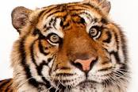
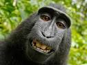
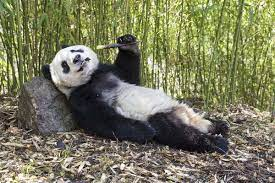
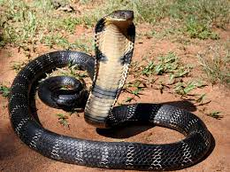

Adress: 2000 Meadowvale Rd, Toronto, ON M1b 5K7
| Name | Picture | Description | Popularity |
|---|---|---|---|
| Tiger |  | a very large solitary cat with a yellow-brown coat striped with black, native to the forests of Asia but becoming increasingly rare. | |
| Monkey |  | Most species are arboreal, using all four limbs to leap from tree to tree. They can sit upright and stand erect. Most species run along branches rather than swinging arm over arm like the apes. | |
| Giant Panda |  | Giant pandas have a distinctive black and white coat, with black fur around their eyes and on their ears, muzzle, legs and shoulders. Their thick, wooly coat helps to keep them warm in their cool mountain homes. Adult pandas are about 150cm from nose to rump, with a 10-15cm tail. | |
| Snake |  | Snakes,Any member of about 19 reptile families (suborder Serpentes, order Squamata) that has no limbs, voice, external ears, or eyelids, only one functional lung, and a long, slender body. |